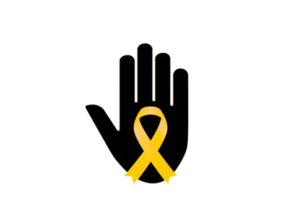

Conscientização sobre Saúde Mental para os Jovens
O Setembro Amarelo teve início nos Estados Unidos em 1994, quando Mike Emme, um jovem de 17 anos, cometeu suicídio. Mike era conhecido como “Mustang Mike” por ter restaurado e pintado um Mustang 68 de amarelo. Em seu velório, amigos e familiares distribuíram cartões com fitas amarelas e a mensagem “Se você precisar, peça ajuda”. Essa iniciativa se tornou um símbolo de prevenção ao suicídio. Inspirada por essa ação, a campanha foi trazida ao Brasil em 2015 pela ABP, em conjunto com o Centro de Valorização à Vida (CVV) e o Conselho Federal de Medicina (CFM), para promover a conscientização sobre saúde mental.
As escolas desempenham um papel fundamental na conscientização sobre saúde mental entre os jovens. Elas podem criar um ambiente seguro e acolhedor para a discussão de temas relacionados à saúde mental, identificando sinais de alerta e oferecendo suporte adequado.